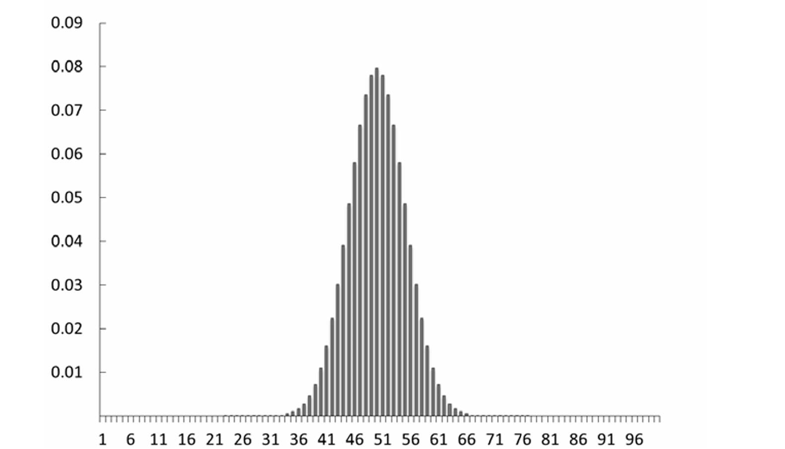
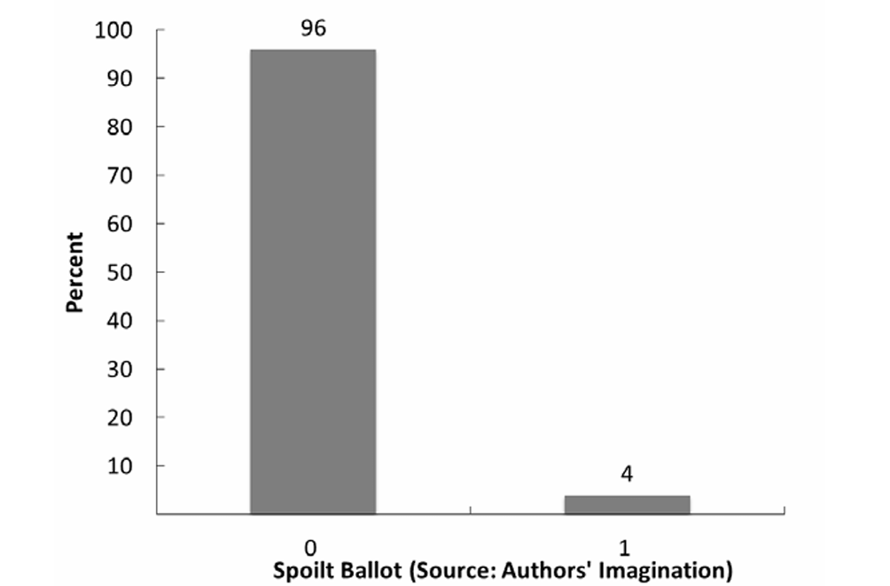
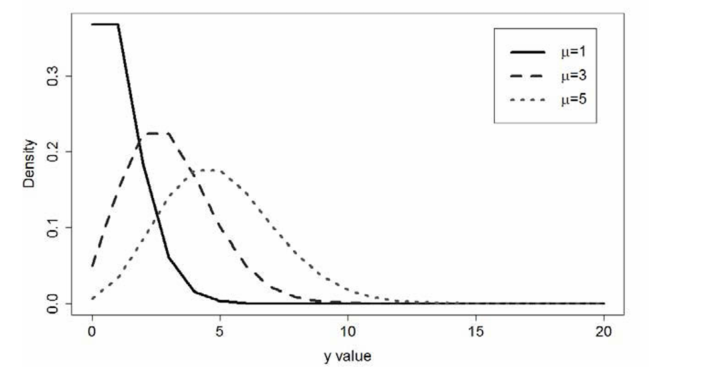

EPPS Math and Coding Camp
Distributions

10.2 SAMPLE DISTRIBUTIONS
- a sample distribution is the distribution of values of a variable resulting from the collection of actual data for a finite number of cases. It turns out that you have encountered many sample distributions in various textbooks, news articles, and other places.
10.2.1 The Frequency Distribution
- The first sample distribution to consider is the frequency distribution. It is a count of the number of members that have a specific value on a variable.
Example of frequency distribution:
Lithuanian Parliamentary Seats, 2000
| Party Abbreviation | Seats Won |
|---|---|
| ABSK | 51 |
| LLS | 33 |
| NS | 28 |
| TS-LK | 9 |
| LVP | 4 |
| LKDP | 2 |
| LCS | 2 |
| LLRA | 2 |
| KDS | 1 |
| NKS | 1 |
| LLS | 1 |
| JL/PKS | 1 |
10.2.2 The Relative Frequency Distribution
- The relative frequency distribution is a transformation of the frequency distribution (to reiterate and be specific, we divide the frequency by the total number of cases).
- Because most people are more familiar with percentages than with proportions, relative frequency distributions are sometimes transformed to percentages (this transformation is conducted by multiplying the proportion by 100%).
10.2.2.1 Histograms
- A histogram is a specific representation of the relative frequency distribution: it is a bar chart of the distribution of the relative frequencies in which the area under each bar is equal to the relative frequency for that value. In other words, the sum of the areas of each bar equals 1, and the area of each bar equals the probability that the value represented by the bar would be chosen at random from the sample depicted.
- \(Pr(Y = y)\) is the area covered by the bar (i.e., the probability that value \(y\) would be drawn at random)
10.4 THE PROBABILITY MASS FUNCTION
- It is possible to develop a number of different probability functions to describe the distribution of a concept (variable), but we limit the discussion to two of them: the probability mass (or distribution) function and the cumulative density function.
- The PMF of a discrete variable is related to the relative frequency distribution.
- The PMF of a discrete (i.e., nominal, ordinal, or integer) variable assigns probabilities to each value being drawn randomly from a population.
- More formally, the PMF of a discrete variable, \(Y\), may be written as \(p(y_i) = Pr(Y = y_i)\) where \(0 \leq p(y_i) \leq 1\) and \(\sum p(y_i) = 1\), and \(Y\) is the variable and \(y_i\) is a specific value of \(Y\).

10.4.2 Parameters of a PMF
Parameter and parameter space
- The term “parameter” refers to a term of known or unknown value in the function that specifies the precise mathematical relationship among the variables.
- The parameter space is the set of all values the parameters can take.
To illustrate, let’s consider the case of voter turnout where we ask, “Which registered voters cast ballots?” There are two outcomes for each voter: (0) did not cast a ballot and (1) cast a ballot. We can write the following PMF:
\[p(y_i = 0) = \pi\]
\[p(y_i = 1) = 1 - \pi\]
10.4.2.1 Location and Scale (Dispersion) Parameters
- The location parameter specifies the location of the center of the distribution. Thus, as one changes the value of the location parameter, one shifts the graph of the distribution’s PMF to the left or right along the horizontal axis.
- For some distributions, also known as the mean, the location parameter is often represented in classical (empirical) probability by the Greek letter \(\mu\) (mu).
- Second, the scale parameter provides information about the spread (or scale) of the distribution around its central location.
- The scale parameter has an empirical referent known as the standard deviation, which is a measure of the distance of the distribution’s values from its mean (or average) value.
- Both the scale parameter (classical probability) and the standard deviation (empirical probability) are usually represented with the Greek letter \(\sigma\) (sigma).
- The dispersion parameter is the square of the scale parameter. As such, it also describes the spread about the central location of the distribution,
- In statistics, the dispersion parameter corresponds to the variance of an empirical distribution, and both are typically identified as \(\sigma^2\) (sigma squared).
10.5 THE CUMULATIVE DISTRIBUTION FUNCTION
- The cumulative distribution function (CDF) describes the function that covers a range of values below a specific value and is defined for both discrete and continuous random variables.
- The CDF for a discrete random variable is:
\[Pr(Y \leq y) = \sum_{i \leq y} p(i)\]
- The equation states that we sum the probabilities of each value for all values less than or equal to y. Sometimes you will see the notation \(f(x)\) for a probability distribution function (PDF or PMF) and \(F(x)\) for a CDF.
- Note that, since the values are mutually exclusive and all the values together are collectively exhaustive, \(Pr(Y \leq y) + Pr(Y > y) = 1\), which implies that \(Pr(Y > y) = 1 - Pr(Y \leq y)\).
- Further, if \(y\) is the highest value that \(Y\) can take, then \(Pr(Y \leq y) = 1\), since in this case we are adding the probability of all outcomes in the sample space. So all CDFs plateau at one.
10.6 PROBABILITY DISTRIBUTIONS AND STATISTICAL MODELING
- One reason we are interested in probability distributions is that they are formal statements of our conjecture about the data-generating process (DGP).
- The appropriateness of a given statistical model for a given hypothesis depends in large part (though not exclusively) on the distributional assumptions of the statistical model and the distribution of the dependent variable that measures the concept that is hypothesized to be caused by various factors.
- In other words, if one wants to draw valid inferences (and there is little reason to be interested in drawing an invalid inference), then one must match the distributional assumptions of the statistical model to the distribution of one’s dependent variable.
10.6.1 The Bernoulli Distribution
The first PMF we will consider applies to binary variables only and can be written as
\[ Pr(Y = y|p) = \begin{cases} 1-p & \text{for } y = 0, \\ p & \text{for } y = 1. \end{cases} \]
- The equation states that the probability that \(Y = 0\) is \(1-p\) and the probability that \(Y = 1\) is \(p\), where \(0 \leq p \leq 1\) (or \(p \in [0,1]\)). Put differently, this says that if the probability that \(Y = 1\) is 0.4, then the probability that \(Y = 0\) is \(1 - 0.4\), or 0.6.
- We can also write the PMF for the Bernoulli distribution as
\[ Pr(Y = y|p) = p^y(1-p)^{1-y} \]
where \(y = 0\) or \(y = 1\). If we solve equation (10.4) for \(y = 0\) and \(y = 1\), we get the information provided in equation: \(Pr(Y = 0) = p^0(1-p)^{1-0} = 1-p\), and \(Pr(Y = 1) = p^1(1-p)^{1-1} = p\).
- The Bernoulli distribution describes randomly produced binary variables and is generally introduced using the example of flipping coins.
- The Bernoulli distribution describes the frequency of two outcomes over repeated observations.
- The Bernoulli distribution is built on an assumption that the individual events are independent of one another.
- So we need to assume that the probability that a given eligible voter casts a ballot in an election is independent of other eligible voters’ decisions to cast a ballot.

10.6.2 The Binomial Distribution
- The PMF for the binomial distribution is defined by the equation:
\[ Pr(Y = y|n,p) = \binom{n}{y}p^y(1-p)^{n-y} \]
where \(n > y\), \(n\), and \(y\) are positive integers and \(0 \leq p \leq 1\). The variables \(n\) and \(y\) in equation (10.5) represent the number of cases (or observations) and the number of positive outcomes, respectively.
- The binomial distribution can describe any discrete distribution with three or more observations where (1) each observation is composed of a binary outcome, (2) the observations are independent, and (3) we have a record of the number of times one value was obtained (e.g., the sum of positive outcomes).
- To develop the binomial distribution, we start with the Bernoulli distribution, which says that \(Pr(Y = 1) = p\) and \(Pr(Y = 0) = 1 - p\) . We will assign a unanimous case (U) the value 1 and a divided case (D) the value 0. Since we have assumed that the three cases are independent, the probability that there are zero unanimous (i.e., three divided) cases is the product of the marginal probabilities that each case is divided, or \(Pr(Y = 0,0,0): (1-p) \times (1-p) \times (1-p) = (1-p)^3\). This matches the equation when \(n = 3\) and \(y = 0\).
10.6.4 Event Count Distributions
- Many variables that political scientists have created are integer counts of events: the number of bills passed by a legislature, the number of wars in which a country has participated, the number of executive vetoes, etc.
10.6.4.1 The Poisson Distribution
- Its Probability Mass Function (PMF) can be written as:
\[ Pr(Y = y \mid \mu) = \frac{\mu^y}{y! \times e^{-\mu}} \]
- The graph of the Poisson distribution, displayed in the figure, reveals an asymmetry: these distributions tend to have a long right tail.

Exercises:
Exercise 1
Given:
\(P(A)=0.4\), \(P(B)=0.3\), \(P(A\cup B)=0.6\)
Find: \(P(A\cap\overline{B})\)
We use the identity:
\[
P(A\cup B) = P(A) + P(B) - P(A\cap B)
\]
Substitute known values:
\[
0.6 = 0.4 + 0.3 - P(A\cap B) \Rightarrow P(A\cap B) = 0.1
\]
Now recall:
\[
P(A) = P(A\cap B) + P(A\cap\overline{B}) \Rightarrow P(A\cap\overline{B}) = P(A) - P(A\cap B)
\]
\[ P(A\cap\overline{B}) = 0.4 - 0.1 = 0.3 \]
Answer:
\(P(A\cap\overline{B})=0.3\)
Exercise 2
Given:
\(P(A)=P(B)=P(C)=\frac{1}{4}\), \(P(AB)=0\), \(P(AC)=P(BC)=\frac{1}{16}\)
Find:
- Probability that at least one of A, B, or C occurs
- Probability that none of them occurs
We use the inclusion-exclusion formula:
\[
P(A\cup B\cup C) = P(A)+P(B)+P(C) - P(AB)-P(AC)-P(BC)+P(ABC)
\]
Substitute known values:
\[
P(A\cup B\cup C) = \frac{1}{4} + \frac{1}{4} + \frac{1}{4} - 0 - \frac{1}{16} - \frac{1}{16} + 0
\]
Simplify:
\[
P(A\cup B\cup C) = \frac{3}{4} - \frac{1}{8} = \frac{5}{8}
\]
Since the probability that none occur is the complement:
\[
P(\text{none}) = 1 - P(A\cup B\cup C) = 1 - \frac{5}{8} = \frac{3}{8}
\]
Answer:
1. \(P(A\cup B\cup C)=\frac{5}{8}\)
2. \(P(\text{none})=\frac{3}{8}\)
Exercise 3
A factory sources light bulbs from two producers:
Factory A provides \(60%\) of the bulbs with a \(90%\) pass rate.
Factory B provides \(40%\) of the bulbs with an \(80%\) pass rate.
Find:
- The probability that a randomly chosen bulb is from Factory A and passes inspection
- The probability that a randomly chosen bulb is from Factory B and passes inspection
Let:
\(P(A)=0.6\), \(P(B)=0.4\)
\(P(\text{Pass}|A)=0.9\), \(P(\text{Pass}|B)=0.8\)
We use the multiplication rule:
\[
P(\text{A and Pass}) = P(A) \cdot P(\text{Pass}|A) = 0.6 \times 0.9 = 0.54
\]
\[ P(\text{B and Pass}) = P(B) \cdot P(\text{Pass}|B) = 0.4 \times 0.8 = 0.32 \]
Answer:
1. \(P(\text{A and Pass}) = 0.54\)
2. \(P(\text{B and Pass}) = 0.32\)
Exercise 4
Let the probability density function be defined as:
\(f(x)=kx+1\) for \(0 < x \leq 2\)
\(f(x)=0\) otherwise
Find:
- The value of \(k\) such that \(f(x)\) is a valid PDF
- \(P(1.5 < x < 2)\)
To ensure \(f(x)\) is a valid probability density function, it must integrate to 1:
\[ \int_0^2 (kx + 1)\,dx = 1 \]
Compute the integral: \[ \int_0^2 (kx + 1)\,dx = \left[\frac{k}{2}x^2 + x\right]_0^2 = \frac{k}{2}(4) + 2 = 2k + 2 \]
Set equal to 1 and solve for \(k\): \[ 2k + 2 = 1 \Rightarrow k = -\frac{1}{2} \]
Now compute the probability: \[ P(1.5 < x < 2) = \int_{1.5}^2 \left(-\frac{1}{2}x + 1\right)\,dx \]
Use antiderivative: \[ \int_{1.5}^2 \left(-\frac{1}{2}x + 1\right)\,dx = \left[-\frac{1}{4}x^2 + x\right]_{1.5}^2 \]
Evaluate: \[ F(2) = -\frac{1}{4}(4) + 2 = -1 + 2 = 1 \\ F(1.5) = -\frac{1}{4}(2.25) + 1.5 = -0.5625 + 1.5 = 0.9375 \]
So: \[ P(1.5 < x < 2) = F(2) - F(1.5) = 1 - 0.9375 = 0.0625 \]
Answer:
1. \(k = -\frac{1}{2}\)
2. \(P(1.5 < x < 2) = 0.0625\)
Exercise 5
Given the probability density function:
\(f(x) = -\frac{1}{2}x + 1\) for \(0 \leq x \leq 2\)
\(f(x) = 0\) otherwise
Find the cumulative distribution function \(F(x)\).
To find \(F(x)\), we compute the integral: \[ F(x) = \int_{-\infty}^x f(t)\,dt \]
Since \(f(x)=0\) for \(x<0\) and \(x>2\), we define \(F(x)\) piecewise:
For \(x < 0\): \[ F(x) = 0 \]
For \(0 \leq x \leq 2\): \[ F(x) = \int_0^x (-\frac{1}{2}t + 1)\,dt = \left[-\frac{1}{4}t^2 + t\right]_0^x = -\frac{1}{4}x^2 + x \]
For \(x > 2\): \[ F(x) = 1 \]
Answer:
The cumulative distribution function is: \[
F(x) =
\begin{cases}
0 & \text{if } x < 0 \\
-\frac{1}{4}x^2 + x & \text{if } 0 \leq x \leq 2 \\
1 & \text{if } x > 2
\end{cases}
\]
Any Questions?